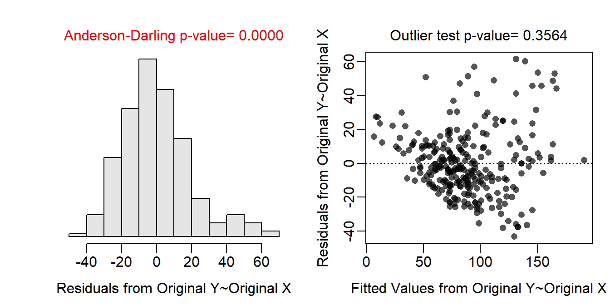
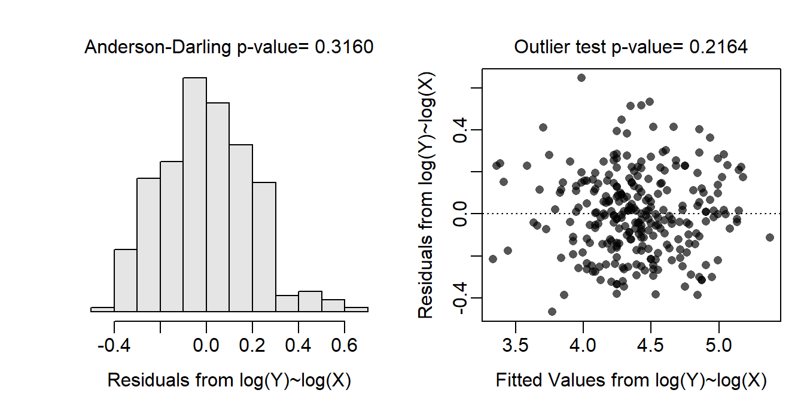
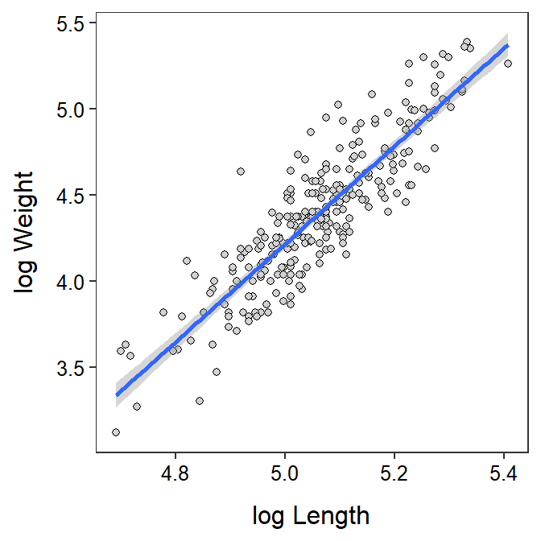

Measuring the live body weight of large-bodied animals can be impractical when equipment needed to weigh individuals is inadequate or unavailable. Thus, the objective of this analysis is to determine if body weight can be predicted from body length for non-cub bears (i.e., older than one year of age). The specific hypotheses for this analysis are:
H0: “no relationship between weight and length of non-cub black bears”
HA: “is a relationship between weight and length of non-cub black bears”
A total of 274 bears were examined for this study. There is not nearly enough information in the background to fully address the independence assumption, but it is unlikely that the weight of any one bear will have much of an impact on any other bear, let alone have an impact on all other bears. Thus, the independence assumption is adequately met.
The un-transformed data are clearly non-linear and heteroscedastic (see first residual plot below); thus a transformation should be considered. Through a process of trial-and-error, and realizing that weight-length data follows a power function relationship for most organisms, both weight and length were log-transformed. With this transformation the data were largely linear and homoscedastic (see second residual plot below). In addition, the residuals were normal (Anderson-Darling test p=0.3160) and absent of significant outliers (outlier test p=0.2164). Thus, the analysis will continue with a log-log transformation.
There is a significant relationship between log weight and log length of the black bears (ANOVA p<0.00005). In fact, 77.6% of the variability in log weight is explained by log length. The scatterplot with the best-fit line superimposed shown below illustrates the strength of the relationship.
The mean log weight of a bear increases between 2.664 and 3.030 for each unit increase in log body length of the bears. More importantly the mean weight is multiplied by a value between 14.361 and 20.693 for each 2.718 unit increase in length of the bear.
As an example, the weight for a bear with a body length of 130 cm is between 31.5 and 68.3 kg.
These results indicated a fairly strong relationship between weight and length that can be used to predict weight from length, though the precision of this estimate is fairly poor.
bb <- read.csv("https://raw.githubusercontent.com/droglenc/NCData/master/BlackBears.csv")
bb <- filter(bb,age>1)
n <- nrow(bb)
lm.bb <- lm(weight~length,data=bb)
assumptionCheck(lm.bb)
assumptionCheck(lm.bb,lambday=0,lambdax=0)
bb$loglength <- log(bb$length)
bb$logweight <- log(bb$weight)
lm.bbt <- lm(logweight~loglength,data=bb)
anova(lm.bbt)Analysis of Variance Table
Response: logweight
Df Sum Sq Mean Sq F value Pr(>F)
loglength 1 35.853 35.853 941.89 < 2.2e-16
Residuals 272 10.354 0.038 rSquared(lm.bbt)[1] 0.7759273cfs.bbt <- cbind(Est=coef(lm.bbt),confint(lm.bbt)) ## log-log scale
btcfs.bbt <- exp(cfs.bbt) ## back-transformed to original scale
lens <- c(130,160,190)
nd <- data.frame(loglength=log(lens))
( p.logw <- predict(lm.bbt,newdata=nd,interval="prediction") ) ## Log scale fit lwr upr
1 3.837944 3.451493 4.224395
2 4.429122 4.044314 4.813930
3 4.918403 4.532133 5.304673cbind(obs=1:3,length=lens,exp(p.logw)) ## Back-transformed obs length fit lwr upr
1 1 130 46.42991 31.54746 68.33312
2 2 160 83.85774 57.07199 123.21490
3 3 190 136.78402 92.95667 201.27515ggplot(data=bb,mapping=aes(x=loglength,y=logweight)) +
geom_point(pch=21,color="black",fill="lightgray") +
labs(x="log Length",y="log Weight") +
theme_NCStats() +
geom_smooth(method="lm")`geom_smooth()` using formula 'y ~ x'